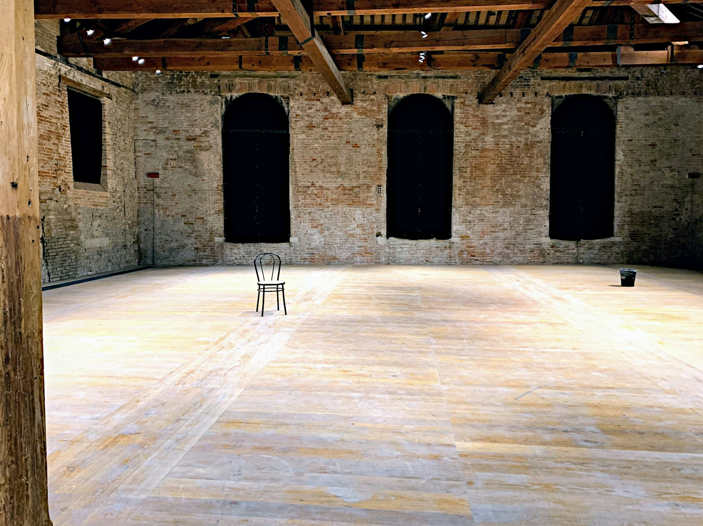

1 hour? 1 day? 1 year? Or long enough to become an expert?
People start new things with ease, but rarely see them through. It is easy to blame a lack of discipline, but looking back, most projects collapse simply because the work turns... dull. The staying power of an ambition only reveals itself on the day the initial excitement evaporates.
1. The Empty Room Experiment
In 2014, a team of psychologists at the University of Virginia and Harvard invited volunteers into a sparse, unadorned room. Before entering, participants handed over all personal items, including phones and pens. Their assignment was simple: sit quietly for 15 minutes and entertain themselves with their own thoughts, without sleeping or standing up.

Before going in, each participant received a sample of a mild electric shock to the ankle so they knew what it felt like. When asked whether they would surrender part of a hypothetical $5 reward to avoid feeling it again, many said they would pay to spare themselves the jolt.
Then they were left alone in the room with a button connected to the exact same shock device. Nobody told them to touch it.
Yet among those who said they would pay to avoid the shock, 12 out of 18 men pressed the button at least once during those 15 minutes. Among women, 6 out of 24 pressed it (one outlier participant pressed it 190 times and was excluded from analysis).
Later replications with more than 2,500 people in 11 countries found the same core result almost everywhere: most people would rather do something than sit alone with their thoughts.
The researchers closed their paper in Science with a striking line:
“The untutored mind does not like to be alone with itself.”
Wilson et al., Science (2014)
Roughly 350 years earlier, Blaise Pascal observed something very similar in his Pensées:
“I have often said that the sole cause of man’s unhappiness is that he does not know how to stay quietly in his room.”
Blaise Pascal, Pensées §136
2. What Actually Is Boredom?
Bertrand Russell once defined boredom as “a thwarted desire for events.” The description captures the restlessness, but leaves open why a familiar task suddenly turns unbearable.
Modern psychology offers a more systematic explanation. In 2018, Erin Westgate and Timothy Wilson published the MAC model (Meaning and Attentional Components), showing that boredom strikes whenever one of two mismatches occurs:
- An attentional mismatch: What you are doing fails to match your available mental bandwidth. Tasks that are too simple leave the mind with nowhere to anchor, while tasks that are too demanding cause focus to slip away repeatedly.
- A meaning mismatch: You no longer see how the immediate effort connects to anything you genuinely value. The work feels disconnected from an outcome that matters.
Framed this way, boredom is neither a moral failure nor proof of laziness. It is a predictable psychological response, much like hunger or fatigue.
3. Day Ten at the Stone Layer
Imagine digging a well in your backyard with a hand shovel. The first few days feel exciting. The topsoil is soft and damp, yielding by the shovelful. Yesterday the ground was flat; today you stand in a hole waist-deep. You take a photo, and neighbors passing by remark on your progress.
Then day ten arrives, and the blade strikes bedrock.
You deliver a hundred strikes, and the hole deepens by barely a handspan. You climb up, look down, and the bottom looks identical to yesterday. Your palms are blistered and your shirt is soaked with sweat, yet you can barely see the difference.
At this stone layer, both attention and meaning break down simultaneously. Attention wavers because the required effort skyrockets while progress becomes almost invisible. Meaning frays because the deeper you go, the darker it gets: no one stands at the rim applauding, and doubts creep in about whether there is any water beneath this rock at all.
This is where most projects quietly stall. The work has not necessarily become impossible; it has simply become monotonous.
Abandonment rarely arrives through a dramatic decision. It starts modestly: “I am tired today; I will pick it back up tomorrow.” Three weeks later, dry leaves cover the opening. You glance at it with a twinge of guilt and look away. In daily life, that abandoned pit might be a folder left unopened on your desktop, or a book left face-down at page 40.
The natural impulse is to climb out, walk to the opposite corner of the yard, and start a fresh hole. There the soil is soft again, and every strike feels productive. People often call this “pivoting” or “discovering a new passion.” Ten days later, the shovel strikes rock again.
After a few years, the yard is dotted with waist-deep pits, each bearing the marks of early enthusiasm, yet none holding a single drop of water.
4. Boredom Is a Signal
If you treat boredom as an enemy, your instinct is to run. Psychologists James Danckert and John Eastwood offer a different interpretation in Out of My Skull: boredom is a cognitive prompt signaling that your current engagement is no longer delivering a sense of agency or progress.
That prompt calls for a change in approach, not an abandonment of the work.
This distinction is where many stumble. The instant boredom settles in, people jump to the conclusion that they picked the wrong project, bought the wrong book, or chose an ineffective tool.
When the urge to quit arises, ask yourself: Am I shifting direction because I received new information, or simply because I crave novelty? If verifiable data shows an approach is failing, adapting makes sense. If nothing has changed except an internal restlessness, boredom is merely disguising itself as tactical rethinking.
(A necessary distinction: this discussion concerns the friction encountered during deep skill acquisition and demanding intellectual labor. If an emptiness spreads to every area of your life and does not lift, it may signal clinical depression, which calls for professional guidance rather than brute persistence.)
5. The More You Escape, the More Bored You Get
The most accessible escape hatch sits in everyone’s pocket: the smartphone. The moment a lull appears, fingers drift automatically toward the screen.
In 2024, Katy Tam and Michael Inzlicht at the University of Toronto ran seven experiments across 1,200 participants to test whether digital switching actually cures boredom. They compared individuals who watched a video straight through against those allowed to skip ahead or jump across clips at will.
The findings were clear: switching behaviors reliably made participants feel more bored, less satisfied, and left them finding the material less meaningful. Enjoyment came from sustained immersion, whereas fragmented skimming only produced a fleeting illusion of relief. Reaching for a screen to avoid dullness compounds the restlessness and lowers your boredom threshold.
Dr. Gloria Mark’s research into workplace attention tracking reveals a parallel trend: the average duration a person maintains focus on a single screen before switching tabs dropped from two and a half minutes in 2004 to roughly 47 seconds in recent years. Rapid switching conditions the brain to discard a task the second its novelty fades.
6. The Boredom Threshold Is a Skill
Certain disciplines appear deceptively repetitive from the outside. Drafting construction drawings or auditing balance sheets involves adjusting line weights, verifying dimensions, and double-checking references hour after hour. Doing it once is manageable. The real challenge is doing it hundreds of times over months while still taking care and striving for subtle improvement.
Studies by Angela Duckworth and Anders Ericsson on the National Spelling Bee illustrate this clearly. Contestants studied in multiple ways: reading casually, being quizzed by others, or spending solitary hours memorizing words. The solitary memorization, what Ericsson termed deliberate practice, was rated by participants as the most mentally taxing and least entertaining form of preparation. Yet it was the single strongest predictor of competition success. Grittier spellers did better largely because they put in more of this solitary practice.
Deliberate practice does not account for every difference; innate aptitude and circumstances still matter. But among individuals with comparable starting conditions, the gap between competent practitioners and true masters often hinges on who can stay with the dull parts of the craft long enough to hone their skill.
7. Training
A tolerance for boredom is not an unchangeable personality trait. It functions like aerobic endurance, expanding with deliberate exposure.
- Measure your current threshold: Identify the most tedious task you have ever sustained without looking at your phone or switching windows, and note how long you lasted. That baseline reveals your current ceiling.
- Revisit the empty room: Leave your phone in another room, set a 15-minute timer, and sit quietly without reading or doodling. Sitting through that stillness, you will feel how restless your mind is.
- Strip unnecessary stimulation from routine tasks: Try washing dishes without a podcast, walking without headphones, or eating lunch without a screen nearby. The first few minutes will feel restless; allow the friction to crest without reaching for a distraction.
- Work within bounded intervals: Select a single task and set a timer for 30 minutes. If the urge to switch appears, maintain a strict binary choice: continue working or sit staring at the wall. As Ericsson’s research shows, even elite performers rarely exceed two to four hours of peak deliberate practice daily. Begin with short blocks and build capacity incrementally.
- Decide your primary task the night before: Write down the single most critical task for the following morning before going to bed. Starting the day with the decision already resolved spares mental energy for execution.
The objective of this conditioning is to quiet the internal friction: sitting down to do what needs doing, finishing the block, and moving on without an exhausting internal debate.
8. Your Well
More than 2,300 years ago, Mencius said, in Jin Xin I:
有為者，辟若掘井。掘井九軔而不及泉，猶為棄井也。
(A person with a purpose is like someone digging a well. If he digs down nine ren (roughly seventy-two cubits) without reaching the spring, it is still an abandoned well.)
Groundwater does not rise incrementally to reward half-finished labor. No one drinks from a half-dug shaft, and the final strike that opens the aquifer looks no different from the thousands of exhausted blows that preceded it. From the bottom of the pit, you cannot see how close you are to the water.
If you stop before reaching the spring, the deepest hole remains an abandoned pit.
How high is your boredom threshold?
References
- Wilson, T. D., Reinhard, D. A., Westgate, E. C., Gilbert, D. T., Ellerbeck, N., Hahn, C., Brown, C. L., & Shaked, A. (2014). Just think: The challenges of the disengaged mind. Science, 345(6192), 75–77. https://doi.org/10.1126/science.1250830
- Buttrick, N., Choi, H., Wilson, T. D., Oishi, S., Boker, S. M., Gilbert, D. T., et al. (2019). Cross-cultural consistency and relativity in the enjoyment of thinking versus doing. Journal of Personality and Social Psychology, 117(5), e71–e83. https://doi.org/10.1037/pspp0000198
- Westgate, E. C., & Wilson, T. D. (2018). Boring thoughts and bored minds: The MAC model of boredom and cognitive engagement. Psychological Review, 125(5), 689–713.
- Danckert, J., & Eastwood, J. D. (2020). Out of My Skull: The Psychology of Boredom. Harvard University Press.
- Tam, K. Y. Y., & Inzlicht, M. (2024). Fast-forward to boredom: How switching behavior on digital media makes people more bored. Journal of Experimental Psychology: General. https://doi.org/10.1037/xge0001639
- Mark, G. (2023). Attention Span. Hanover Square Press.
- Ericsson, K. A., Krampe, R. T., & Tesch-Römer, C. (1993). The role of deliberate practice in the acquisition of expert performance. Psychological Review, 100(3), 363–406. https://doi.org/10.1037/0033-295X.100.3.363
- Duckworth, A. L., Kirby, T. A., Tsukayama, E., Berstein, H., & Ericsson, K. A. (2011). Deliberate practice spells success: Why grittier competitors triumph at the National Spelling Bee. Social Psychological and Personality Science, 2(2), 174–181. https://doi.org/10.1177/1948550610385872
- Pascal, B. Pensées, §136 (translated by A. J. Krailsheimer, Penguin Classics).
- Russell, B. (1930). The Conquest of Happiness.
- Mencius, Jin Xin I (孟子·盡心上).